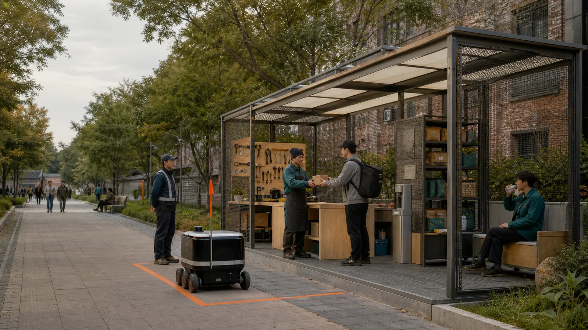

43.6 km²
Research logistics, repair, return, talent and accountability as AI-ecosystem capacity.

Public park experience remains continuous; backstage service nodes stay discrete. Machines stop behind a line, responsibility passes to a person, and every module has expiry, human fallback and an exit.
CONCEPT ONLYPROVISIONAL GEOMETRYOFFLINE / BILINGUALExact official polygons are unavailable. Repository provisional geometry is not an official redline, precise-area source or statutory control.
The spine is a work-order, time-window and exit protocol—not a new road through the park.
Research logistics, repair, return, talent and accountability as AI-ecosystem capacity.
Compare city-side interfaces in a provisional scope; confer no statutory control.
Proof north, relay centre, return south; exact plots await confirmation.
Prove handover, safety, repair and reversible components in a contained space.
Give every digital task a responsible person and a no-account alternative.
Give packages, spares, event parts and retired devices a documented return.
Gapless character cells, replaced wholesale when official data arrives.
Reversible module footprints, not existing buildings or demolition objects.
Verified heritage demolition proposals; heritage and tree checks come first.
Park paths carry no cross-node distribution.
Contained pilot only; exceptions switch to humans.
Loading, waiting and equipment never occupy the route.
Baseline, contained proof, disassembly and restoration.
Federate low-risk yards; contract before consolidation space.
Scale by evidence; renew or retire at expiry.
Operational targets remain unknown: no baseline, no result.
| CONTRACT | EVIDENCE | LIMIT |
|---|---|---|
| 23 official + agent requirements | compliance_matrix.json | Section, layer, metric, drawing, source, assumption and check links |
| 15 design-depth items | design_depth_matrix.json | Concept depth never claims regulatory adoption |
| 5 mandatory standards | standard_matrix.json | Standards become professional gates |
Repository self-check writes the final state to self_check.json; every later edit requires fresh hashes and validation.
The registry covers the call, taskbook, policy and six primary case entry points; webpage images are not reused.
Every location, window, speed, dimension and operation target awaits official geometry, baseline, ownership, survey and professional review.
Original diagrams and page; no case image, trademark, portrait or proprietary basemap reused. The cover is a fictional, non-site-specific concept generated with OpenAI ImageGen from a participant-authored prompt.